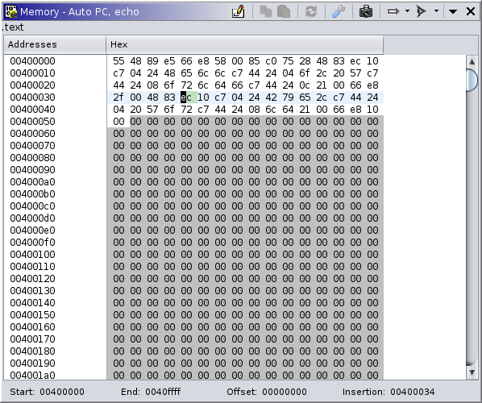

|  |
The memory, or dynamic bytes, window is analogous to Ghidra's bytes window for static analysis, but in the dynamic context. It displays memory contents from a target. More precisely, it displays recorded memory contents in a trace. In most use cases, that trace is "at the present," meaning it is the most recent memory from a live target. Multiple memory windows can be displayed simultaneously, using the same pattern as many other Ghidra windows. The "primary" window is always displayed and generally tracks with the rest of the tool. Any window can be "snapshotted," i.e., cloned. This is where memory windows differ from static bytes windows. Static clones remain in place; they do not automatically navigate. Dynamic clones can still be configured to navigate, following the rest of the tool. A common use is to configure a clone to follow the stack pointer. Still, you can disable a window's automatic navigation, so it behaves like a true clone. A current limitation is that you cannot use clones to display different points in time for the same trace.
Because not all memory is recorded, some background coloring is used to indicate the state of attempted memory reads. Regardless of state, the most-recent contents, as recorded in the trace, are displayed in the window, defaulting to 00. "Stale" memory, that is ranges of memory which have not been read at the current time, are displayed with a darker background. Where that memory is marked "read-only" and has been successfully read previously, that coloring is subdued, since the contents are not likely to have changed. Where a read was attempted but failed, the first address in the failed range is displayed with a pink background. Otherwise, up-to-date contents are displayed with the default background color.
The dynamic bytes viewer supports editing memory. See Control and Machine State. Such edits are performed as usual: Toggling edits and typing into the editor, or by pasting byte strings. These edits may be directed toward a live target, the trace, or the emulator. NOTE: Please be wary of hand-typing large edits into the emulator, since every keystroke may produce a unique scratch snapshot. It is better to paste such edits instead.
The memory window provides a variety of actions, some for managing and configuring windows, and others for capturing memory from a target.
This action is always available in the menu. It creates a new memory window with the same configuration as the primary memory window. It is equivalent to cloning the primary memory window.
This action is only available on cloned memory windows. The primary window always follows the tool's current thread. Disabling this toggle causes the clone to remain on its own current thread rather than following the tool's. The current thread is used when computing a location to navigate to automatically. It is only applicable when "Track Location" is set to something other than "Do Not Track."
This action is equivalent to the same action in the Dynamic Listing window. NOTE: This feature is disabled when the edit toggle is on.
This action is equivalent to the same action in the Dynamic Listing window.
|
This action is available when the current trace is "at the present" with a live target, and there is a selection of addresses in the memory window. It will instruct the recorder to read and record the contents of memory for the selected range(s). Typically, the viewable addresses are automatically read — see the Auto-Read action.
This action is always available on all memory windows. It configures whether or not the memory range(s) displayed in the window are automatically read and recorded. Like the Read Memory action, it is only permitted when the current trace is "at the present" with a live target. It occurs when the user scrolls the window, or when the window is otherwise navigated to a new location. Note that other components may read memory, regardless of this windows's configuration. For example, the recorder typically reads the page of memory pointed to by the program counter. In other words, this action cannot "disable all memory reads." The options are pluggable, but currently consist of:
This action does the same as it does for the static context.
This action does the same as it does for the static context. Edits may be rejected if the trace's editing mode is set to Read-Only in the tool. NOTE: This toggle also disables automatic navigation in order to prevent the cursor from being moved unexpectedly while typing edits.